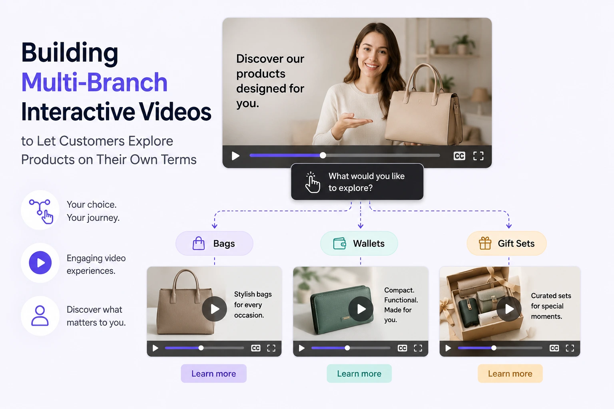
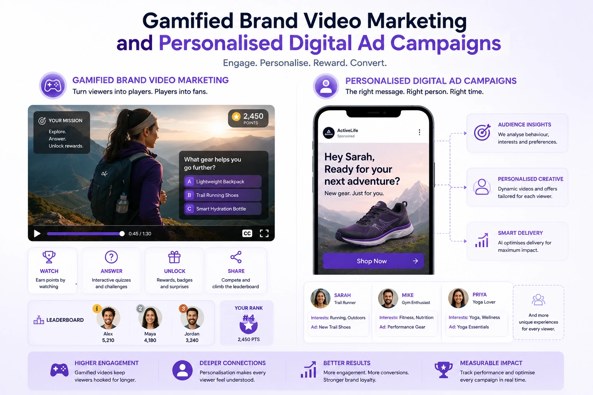

Building Multi-Branch Interactive Videos to Let Customers Explore Products on Their Own Terms
The Fundamental Problem with Linear Product Video
Every brand video, product demo, and commercial film produced in the traditional linear format has the same structural limitation: it delivers the same content in the same sequence to every viewer, regardless of what each individual viewer already knows, what they are specifically interested in, and what stage of the purchase journey they are currently at.
A prospective buyer who has already researched the product category sits through the same two-minute problem statement that is designed for a buyer who has never heard of the product. A buyer who wants to understand a specific use case sits through a generic overview that addresses every use case at surface depth rather than their specific use case in depth. A buyer who is ready to purchase watches a brand story film designed to build awareness rather than a product demonstration designed to convert.
The result is a video that serves no viewer particularly well because it is trying to serve every viewer simultaneously. And the conversion rate of that video reflects this structural compromise.
Interactive branching video production resolves this fundamental limitation by allowing each viewer to shape the content they receive through their own choices — navigating to the specific information they need, at the depth they require, in the sequence that matches their own evaluation journey. The brand's video becomes a conversation rather than a broadcast — and conversations, unlike broadcasts, respond to the specific needs of the specific person they are with.
The Anatomy of an Interactive Branching Video
Understanding interactive branching video production requires understanding its structural components — the specific elements that distinguish it from standard linear video and that determine its commercial effectiveness.
The key structural components:
- The trunk sequence. The video segment that all viewers experience before the first branch point — typically 15 to 45 seconds that establish the brand's identity, the product's context, and the value of continuing. The trunk sequence must hook every viewer regardless of their awareness level or purchase readiness, because it is the only segment where the audience is undifferentiated. The trunk ends with the first branch choice — presented visually as clickable options that appear on-screen before the trunk sequence finishes.
- The branch choice points. The specific moments in the video where the viewer is presented with two or more options and must make a selection to continue. Each choice point should present options that are genuinely distinct — different enough that different viewers will make different choices — and should be presented with enough visual clarity that the viewer understands immediately what selecting each option will show them. Choice fatigue is a real risk in branching video: more than three options at a single choice point produces decision paralysis rather than personalised exploration.
- The branch sequences. The video segments that play in response to specific viewer choices — each optimised for the specific viewer profile and information need that the preceding choice revealed. A branch sequence for a viewer who selected "I am a business owner" should differ in both content and tone from one for a viewer who selected "I am buying for personal use" — because the choice has revealed the viewer's identity and the branch sequence can now serve that identity specifically.
- The convergence points. Moments where different branch paths rejoin a common sequence — typically for the brand's most universal content (testimonials that are relevant to all audience segments, the pricing or CTA sequence that is universal). Convergence points reduce the total volume of unique footage required and ensure every viewer, regardless of their path, receives the conversion-critical content.
- The conversion endpoints. The specific sequence at the end of each completed path that delivers the CTA — calibrated for the specific viewer who has arrived at this endpoint through their specific choices. A viewer who has navigated through the "enterprise use case" branch to the "integration capabilities" branch and arrived at the conversion endpoint receives a CTA appropriate to a B2B buyer evaluating a specific technical requirement — not the generic CTA that a first-time awareness viewer would receive.
Higher Engagement Duration
Viewers of interactive branching video spend significantly longer engaged with the content than linear video viewers — because they are navigating content they selected rather than consuming content they were given. Active choice-making produces higher cognitive engagement than passive viewing, and higher cognitive engagement produces longer session duration and higher retention of brand information.
Implicit Audience Segmentation Data
Every branch choice a viewer makes is a data point that reveals their identity, interest, and purchase intent. An interactive branching video analytics dashboard shows which paths viewers took, where they dropped off, and which paths ended in conversion — providing audience segmentation intelligence that no passive linear video can generate.
Replay and Share Motivation
Viewers who completed one path through a branching video frequently replay to explore alternative paths — particularly when the choice options were genuinely interesting and the branch sequences were distinct and compelling. Replay rate is one of the highest-impact engagement metrics for brand video content, and branching video's intrinsic replay motivation makes it uniquely capable of generating it.
Personalised Conversion Path
The specific path a viewer navigates reveals their purchase readiness and their primary information need. A branching video structured as a dynamic video sales funnel delivers a conversion CTA calibrated to the specific viewer who has arrived at the conversion point — increasing CTA relevance and, with it, conversion rate.

Dynamic Video Sales Funnels: The Conversion Architecture
A dynamic video sales funnel is a branching video built specifically around the stages of the purchase journey — designed so that the branch choices the viewer makes reveal their current awareness and purchase readiness level, and the branch sequences they receive are calibrated to move them from their current level to the next.
The specific structure of a dynamic video sales funnel for an Indian D2C or B2B brand:
- Trunk sequence: the awareness hook (20 to 30 seconds). A brief, high-energy trunk that communicates the brand's core value proposition and the range of the viewer's possible needs. Ends with the first branch choice: "Are you new to [product category]?" / "Do you already know what you're looking for?" This first choice immediately segments the audience into awareness-stage and consideration-stage viewers — allowing completely different content to serve each.
- Awareness branch: the problem-solution sequence (45 to 90 seconds). For viewers who indicated they are new to the category — a comprehensive overview that educates on the problem, introduces the product as the solution, and ends with a second choice: "Which of these challenges is most relevant to you?" Each choice at the second level sends the awareness-stage viewer into the specific problem-solution demonstration most relevant to their expressed challenge, emerging from the demonstration at a consideration-stage convergence point.
- Consideration branch: the evaluation sequence (30 to 60 seconds). For viewers who indicated they already know what they are looking for — a direct evaluation sequence that addresses the specific differentiating factors: "What matters most to you?" / "Quality and craftsmanship" / "Value and efficiency" / "Versatility and range." Each selection directs the consideration-stage viewer to the specific product demonstration most aligned with their primary evaluation criterion, emerging at a decision-stage convergence point.
- Decision-stage convergence: the conversion sequence (20 to 30 seconds). All paths converge at a final sequence that presents the specific CTA calibrated to the viewer's demonstrated interest — a product-specific link for viewers who explored a specific product, a consultation booking link for B2B viewers who explored enterprise applications, a collection overview for viewers who explored multiple product lines.
Interactive Product Demo Films: The Deepest Product Exploration Format
Interactive product demo films are the specific application of branching video to product demonstration — allowing the viewer to explore specific product features, use cases, and variants at the depth they choose rather than at the depth the brand has predetermined.
The production structure for an interactive product demo film:
- The product overview trunk (30 seconds). A compelling visual introduction to the product's overall identity — what it is, who makes it, what context it belongs to. Ends with the first branch: "What would you like to explore?" with options matching the product's primary feature categories, use case contexts, or variant types.
- Feature branch sequences (60 to 90 seconds each). One branch sequence per major product feature or use case — each a complete, depth-first exploration of that specific feature, including close-up demonstration footage, the specific benefit the feature delivers, and the specific buyer profile who cares most about this feature. Each feature branch ends with a secondary choice: "Explore another feature" (looping back to the trunk choice point) or "See pricing and how to buy" (proceeding to the conversion endpoint).
- Variant comparison branches (30 to 45 seconds each). For products with multiple variants — colours, sizes, materials, configurations — a specific branch sequence for each variant that shows that variant's specific visual character, material quality, and use context. For Indian textile and fashion brands with large collections, this structure allows the viewer to explore individual colourways or garment styles without sitting through content about variants they are not interested in.
- Conversion endpoint variants. Multiple conversion endpoints — each calibrated for the specific feature branch or variant that led to it. A viewer who explored the "sustainable materials" feature branch receives a conversion endpoint that highlights the brand's sustainability credentials alongside the CTA. A viewer who explored a specific colourway receives a conversion endpoint that links directly to that colourway's product page.
Clickable Website Video Overlays: Technical Implementation
Clickable website video overlays are the technical mechanism that makes branching video functional on a website — the interactive elements positioned on top of the playing video that the viewer clicks to make branch choices, navigate to product pages, or add items to cart.
The specific implementation approach for clickable website video overlays across the platforms most relevant to Indian e-commerce brands:
Tolstoy (Shopify Native App)
- Integrates directly with Shopify product catalog — product tags and Add to Cart buttons can be embedded directly in video overlays without leaving the product page
- Supports branching video through a choice-screen builder that creates the visual choice UI without coding
- Analytics dashboard shows which paths viewers took and which led to Add to Cart events
- Recommended for: D2C Shopify brands wanting interactive product exploration with in-video purchase capability
Vimeo Interactive (Advanced Plan)
- Full branching video support with a visual branch editor that maps the video network without coding
- Embed code compatible with any website including Shopify, WordPress, and custom HTML
- Supports chapters, hotspots, branch choices, forms, and external URL overlays
- Recommended for: brands needing a flexible platform that works across multiple website environments and requires the most sophisticated branch architecture
Custom HTML5 Implementation
- Full control over the branch architecture, the visual design of the choice UI, and the interaction behaviour
- Built using HTML5 video elements, JavaScript for branch logic, and CSS for overlay styling
- Requires front-end development capability but produces a fully branded experience with no third-party platform dependency
- Recommended for: brands with in-house development capability wanting a fully bespoke interactive video experience without platform constraints

Gamified Brand Video Marketing: The Engagement Architecture
Gamified brand video marketing applies specific game design mechanics to brand video — not by turning the video into a game but by importing the specific psychological drivers that make games engaging into the video experience: choice, consequence, progression, reward, and replay motivation.
The specific game mechanics that translate most effectively into gamified brand video marketing:
- Choice with visible consequence. The most basic game mechanic — and the one most directly applicable to branching video. The viewer makes a choice and immediately sees the consequence: the video changes in response to their selection. The cause-effect immediacy of choice-and-consequence is one of the most engaging cognitive experiences available — the brain rewards itself for the causal power it has exercised. For brands, this means ensuring that branch choices produce immediately visible, meaningfully different consequences — not superficial variations of the same content.
- Progression indicators. Displaying to the viewer how many choices remain before they reach the end of their current path — a progress bar, a "Step 2 of 3" indicator, a visual map of the branch structure — activates the completion instinct that keeps game players advancing toward level completion. For branching video, a simple "You've explored 2 of 5 features" indicator at the end of each branch sequence increases the likelihood that the viewer will continue exploring rather than exiting after their first branch.
- Unlocking and discovery mechanics. Structuring the branching video so that certain branch sequences are only accessible after the viewer has completed prerequisite branches — creating a "you've unlocked a new section" dynamic — increases replay motivation and overall time spent with the brand's video content. For brands with complex product lines, this structure can guide viewers through a logical discovery sequence while maintaining the sensation of autonomous exploration.
- Replay reward. Designing the branching video so that different paths reveal genuinely different and equally valuable content — not minor variations of the same information — gives the viewer a genuine reason to replay. When the viewer understands that they saw only one of three possible paths on their first viewing, the curiosity about the unexplored paths is a specific, named replay motivation that standard linear video cannot create.
Multi-Path Corporate Overviews: The B2B Application
Multi-path corporate overviews apply the branching video architecture to B2B brand communication — allowing a corporate overview video to serve multiple distinct stakeholder audiences (potential clients, prospective investors, recruitment candidates, strategic partners) through a single video experience that branches into audience-specific content after the universal trunk sequence.
The structure of a multi-path corporate overview for an Indian B2B brand:
- Universal trunk (30 to 45 seconds). The brand's vision, scale, and core value proposition — content that is relevant and compelling to every possible viewer regardless of their relationship to the brand. Ends with: "What describes your interest in [Brand]?" — with four options: Potential Client, Investor, Joining Our Team, Partnership Opportunity.
- Potential Client branch (90 to 120 seconds). The brand's client outcomes, case studies, process overview, and service portfolio — ending with a consultation booking CTA and a link to the client case study library.
- Investor branch (90 seconds). The brand's growth metrics, market opportunity, founding team credentials, and operational scale — ending with an investor deck download link and a meeting booking CTA.
- Recruitment branch (60 to 90 seconds). The team culture, working environment, growth opportunities, and current open roles — ending with a careers page link and a direct application CTA.
- Partnership branch (60 seconds). The brand's partnership model, existing partner network, and the specific value the partnership creates for complementary brands — ending with a partnership enquiry form or email CTA.
A single production session produces the trunk sequence and all four branch sequences — and a single video embed on the brand's website, LinkedIn page, and pitch deck serves all four audience types with specifically calibrated content rather than forcing each audience to watch content designed for the others.
Personalised Digital Ad Campaigns: The Paid Media Application
Personalised digital ad campaigns built on branching video apply the interactive format to paid media — deploying branching video content as paid advertising on platforms that support interactive ad formats, and using the branch choice data to feed audience segmentation back into the paid media targeting system.
The specific paid media application for Indian brands:
- LinkedIn interactive video ads. LinkedIn supports interactive video elements including choice overlays — making it the most immediately applicable platform for B2B personalised digital ad campaigns using the branching format. A multi-path corporate overview video served as a LinkedIn video ad to a targeted professional audience allows the viewer to select their specific interest (client, investor, partner, candidate) within the ad unit — and the branch they select both delivers the relevant content and generates a segmentation signal that the LinkedIn campaign can use to retarget them with specific follow-up content.
- Branded content with interactive overlay on YouTube. YouTube's interactive card and end screen features allow branching-style navigation within a YouTube video experience — using cards to offer viewers the choice to jump to specific sections of a longer video, or end screen elements to continue to the next branch sequence. While not a true embedded branching format, the YouTube card system allows a reasonable approximation of the branching experience within the platform's native video environment.
- Retargeting with path-specific creative. The most commercially powerful application of branching video data in paid media is to use the branch path data as the basis for retargeting creative selection. A viewer who navigated the "sustainable materials" branch in an interactive product video and did not convert is retargeted with a static or video ad specifically about the product's sustainable credentials — because the branch choice revealed that sustainability is their primary interest. This path-informed retargeting is significantly more conversion-efficient than demographic-targeted retargeting with generic creative.
Production Planning for Interactive Branching Video: What to Brief
The production planning for interactive branching video production differs significantly from standard video production — because the content map must be fully designed before a single frame is shot, and the shooting plan must account for the visual consistency requirements across all branch sequences.
The pre-production planning requirements:
- Content map first, script second, shot list last. The branch architecture — which choices are presented, which sequences each choice leads to, where the convergence points are, and how many unique video segments are required — must be fully mapped before any scripting begins. A content map that changes after scripting has begun is expensive; a content map that changes after shooting has begun is catastrophic.
- Visual consistency brief across all branch sequences. All branch sequences are experienced by different viewers but must feel like they belong to the same video — same location character, same lighting quality, same colour grade, same presenter energy. A detailed visual brief applied consistently across all branch sequences ensures the branching video feels like one coherent experience rather than a collection of separate videos with inconsistent production quality.
- Choice point UI design before production. The visual design of the choice points — the buttons, the layout, the typography, the animation — must be designed before the trunk sequence is shot, because the trunk sequence's final frames must leave compositional space for the choice UI overlay. A trunk sequence that fills the frame with high-visual-energy content at the choice point moment leaves no legible space for the choice overlay — reducing the clarity of the choice presentation and the click rate on the choices themselves.
- Delivery format per platform. Different interactive video platforms require different source video formats and different methods of specifying branch logic. Confirm the delivery requirements for the chosen platform before the production session to ensure the footage is captured in a format compatible with the platform's interactive video editor.
Conclusion
Interactive branching video production, dynamic video sales funnels, interactive product demo films, clickable website video overlays, gamified brand video marketing, and multi-path corporate overviews represent the frontier of brand video content — the next-gen high-engagement media formats that move video from broadcast to conversation, from passive consumption to active exploration, from averaged content for averaged viewers to personalised content for specific people with specific needs.
The Indian brands that invest in this format now — while interactive branching video is still a competitive differentiator rather than a universal standard — are building a content infrastructure that produces simultaneously higher engagement, richer audience intelligence, and more personalised conversion paths than any linear video equivalent can provide. The production investment is higher than standard video; the commercial return, measured in engagement rate, session duration, audience segmentation data, and conversion rate, is significantly higher.
At The PhD Ads, we produce interactive branching video production for Indian brands — content mapping, multi-branch production planning, platform-specific delivery, and dynamic video sales funnel architecture built for D2C and B2B brands ready to move their video communication from broadcast to conversation.
Key Topics
Ready to Build a Video Experience Your Customers Navigate Rather Than Watch?
At The PhD Ads, we produce interactive branching video production for Indian brands — dynamic video sales funnels, interactive product demo films, multi-path corporate overviews, and gamified brand video marketing, built for brands ready to move from broadcasting to conversing.
Email: team@e2o.in